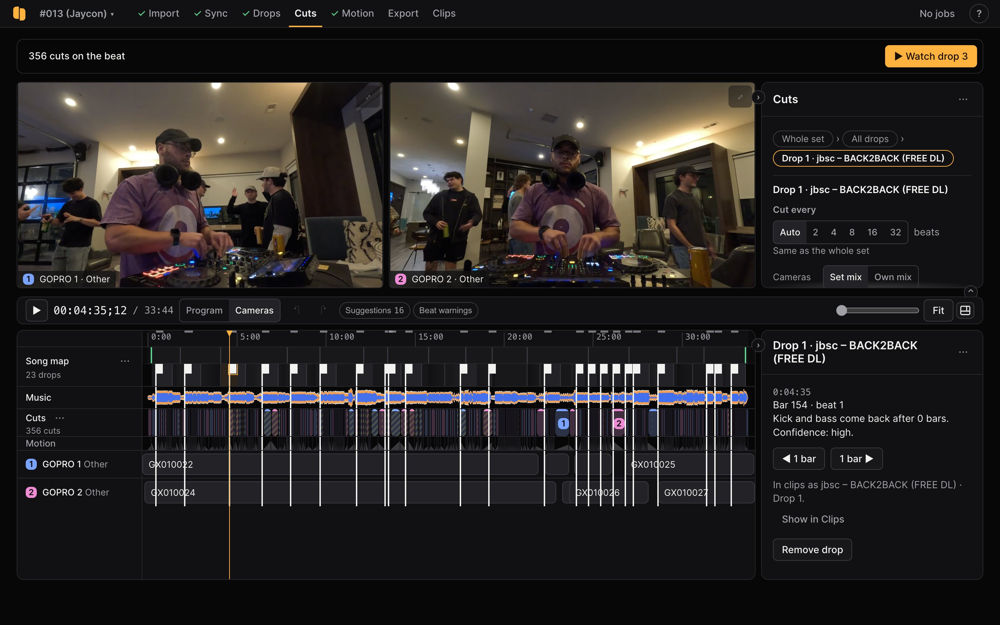
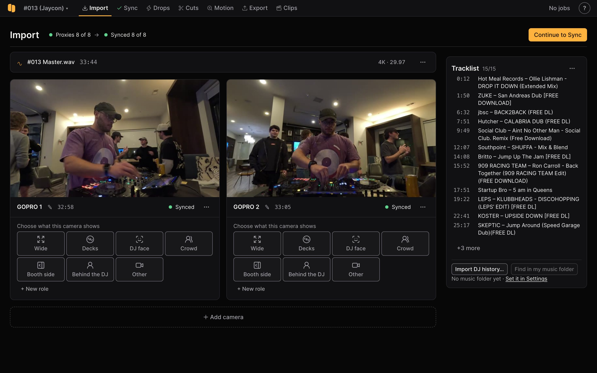
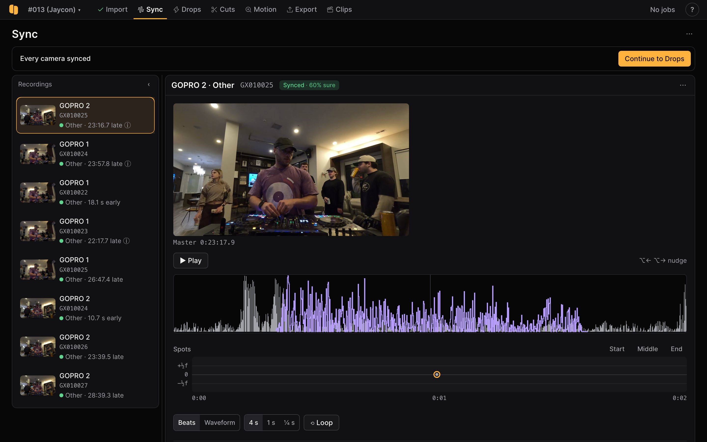
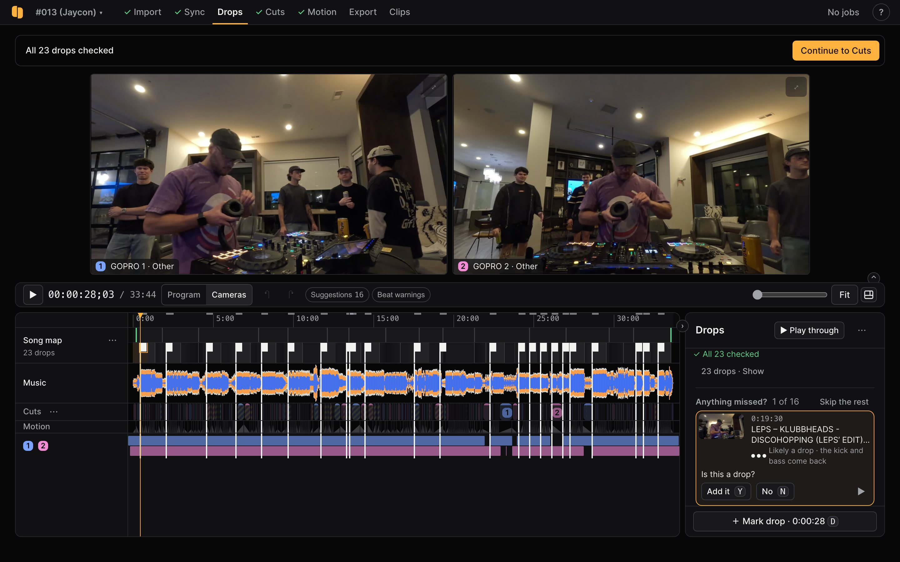
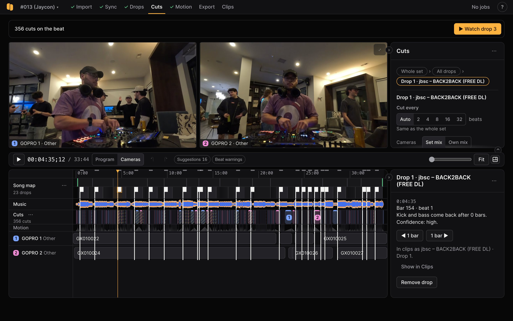
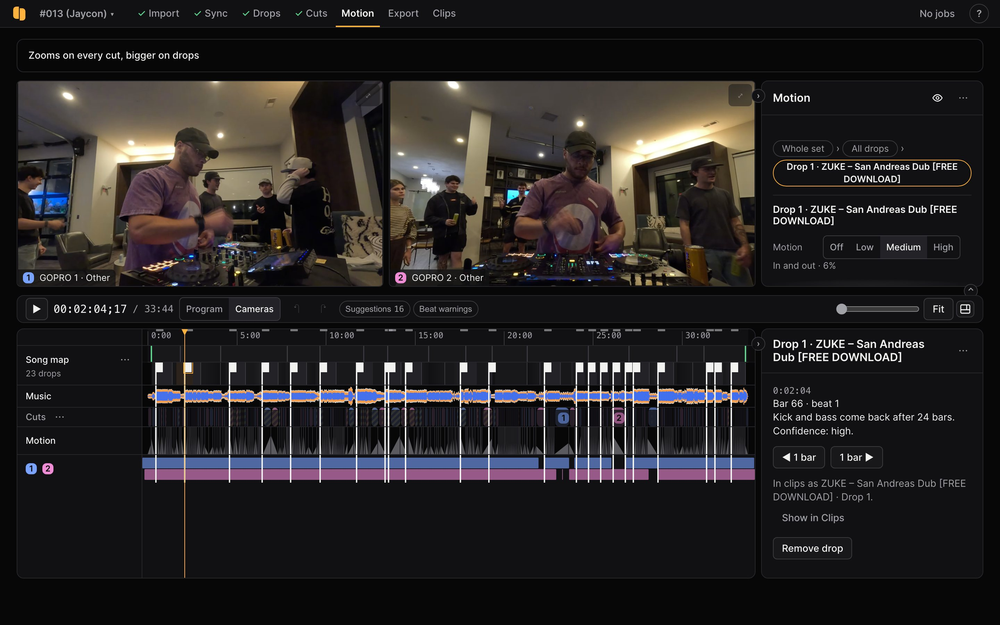
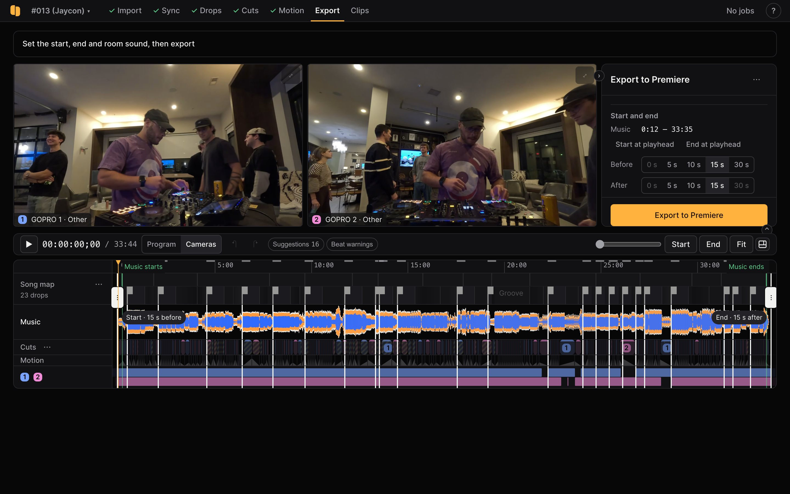
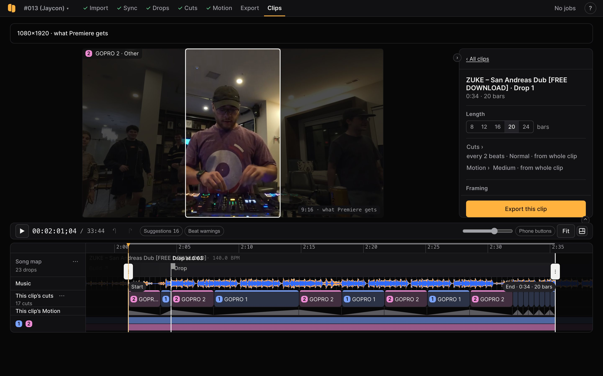

Synced to the mixer, not to each other
GoPros overheat, restart and split files. Every recording is matched to the mixer recording, drift included. On our test set every check point landed within one frame.
For multicam DJ sets
You filmed the set on two, three, four cameras. MultiCut lines every one of them up with the mixer recording, finds the drops, and builds the multicam edit on the beat. Premiere Pro opens it finished.

#01333:4415 songs23 drops140 BPM
Every song and drop above came from the audio alone, in minutes on an Apple silicon Mac. Then the whole edit, each cut on a beat, in under a second.
Watch it cut
A drop from the set above, in the app as it is today. Each cut lands on a beat; the sound is the mixer recording.
Why MultiCut
General editors treat it like one. MultiCut knows the music: where the beat is, where the drop lands, which camera has the DJ when it does.
GoPros overheat, restart and split files. Every recording is matched to the mixer recording, drift included. On our test set every check point landed within one frame.
MultiCut listens to the bass and the kick coming back to find each drop. You hear every one and answer yes or no; the edit is built around the ones you keep.
Cuts land on beats and kicks, never on a beat it isn't sure of. Pick the camera mix; lock, move or re-pick any cut. A 33-minute set is cut in under a second.
How it works
Point it at the set folder: the mixer recording and each camera's files. Split camera chapters are joined, and the tracklist names every song.

Each recording is lined up with the mixer recording, drift corrected and checked against the camera clock. Each one reads Synced, or asks you to look.

The music is analysed: beats, bars, songs and the drops. You hear each drop on the picture and answer yes or no. Missed one? Mark it with D.

The multicam edit, cut on the beat with the camera mix you set, per song or per drop if you like. Where a camera runs out of picture another takes over: never a black frame.

Slow zooms that build into each drop and release on it, per camera: full, half or off. One setting means the same at every energy.

One Premiere Pro project with the cut, the mixer audio, the crowd from the room camera, matched colour and every song and drop as a marker. Open in Premiere hands it over.

Vertical 9:16 clips around every drop, framed to follow the DJ, cut and zoomed like the set. Export one or all.

Under the hood
Finish where you already work
What you need
Any camera that records sound: MultiCut syncs by the sound it hears. It's tested on GoPro HERO13 Blacks, including files split into chapters and cameras that restarted mid-set.
As many as you filmed with. Sets are tested on two; the number keys put any of the first six on a cut.
Yes. It's the clock everything syncs to and the sound of the finished edit.
No. Analysis and editing run on your Mac, offline.
Not yet: Apple silicon Macs only.
Open System Settings › Privacy & Security and choose Open Anyway. That happens once.